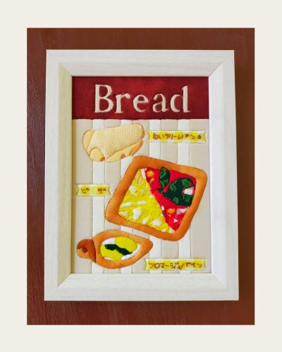

「Bread」
作品サイズ： 127mm × 178mm フォトフレーム2L版
今回は、手づくりしたパンのなかから美味しかったお気に入りのパンを描きました。
孫の紹介がきっかけで、夫と二人でパンのつくり方を習いに行くようになりました。ひと月に1～2回パンを焼くという手づくりの楽しさを味わっています。
常々、何気ない日常の幸せを作品に残しておきたいと思っており、この喜びを作品にしておきたいと考えました。

作品のつくり方については、momenブログ「【オリジナルデザイン】きめこみパッチワーク作品-Bread-」をご覧ください